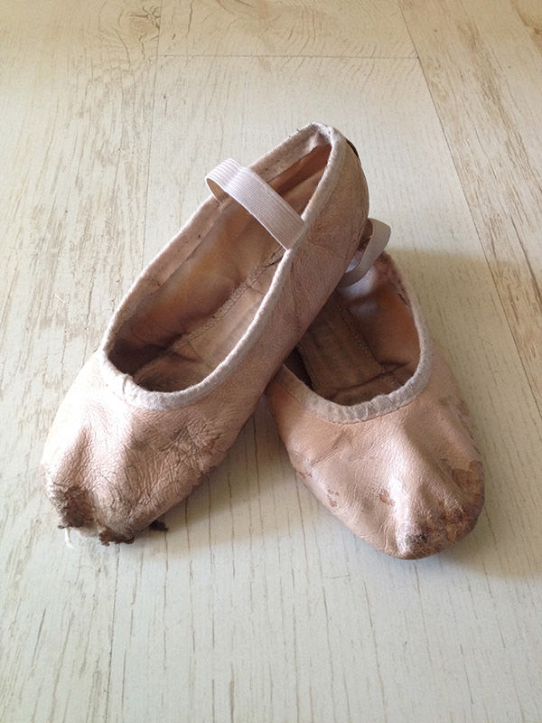

Odjeća
Zahtjeva se adekvatna odjeća za naše nastavne satove, kako bi se promicala ispravna etika, jer je ples disciplina koja zahtjeva lakoću pokreta i određenu opremu. Kad se nosi pravilna odjeća i cipele, to pruža sigurnost i dozvoljava profesoru da vidi pravilnu poziciju plesača kako bi mogao dati prave ispravke sa sigurnošću. Zbog ovih razloga, svi se učenici potiču na pridržavanje sljedećih norma sigurnosti:
- • Trebaju se uvijek nositi ispravne cipele kako bi se izbjegle ozljede.
- • Nijednom učeniku se ne dozvoljava plesati u čarapama ili bosonog, osim u suprotnim uputama.
- • Ne smije se nositi labava ili vrećasta odjeća (uključivši majice) na satovima plesa, osim u suprotnim uputama.
- • Veliki nakit se ne smije nositi na satovima plesa jer bi to moglo dovesti do zbunjenosti i moglo bi prouzrokovati moguću opasnost.
- • Naočale moraju biti svezane sportskom vrpcom, za sigurnost svih plesača.
- • Plesačke cipele se ne mogu nositi izvan plesne dvorane, jer se unosi prljavština u studio što je štetno za pod dvorane i zdravlje polaznika.
Program za djecu i mlade:
- • Pripijene čarape ili kratke čarape, plesni triko i baletne cipele. Baletna suknja je izborna.
- • Kosa se mora skupiti u punđu ili u uredan visoki konjski rep, ako je moguće. Kratka kosa mora se osigurati vrpcom.
- • Nakit (osim malih naušnica) se ne smije nositi na baletnom satu. Profesor može tražiti od učenika da skinu nakit do završetka nastavnog sata.
Baletni program za odrasle:
- • Bilo koja odjeća pripijena uz tijelo u kojoj se učenik može udobno kretati, kao plesni triko i pripijene čarape ili majica s tregerima, ili majica s hlačama za vježbe te poludugačke hlače ili leggings.
- • Trebaju se nositi baletne cipele kako bi se izbjegle ozljede.
- • Kosa mora biti u punđi ili u urednom visokom konjskom repu, ako je moguće. Kratka kosa mora se osigurati vrpcom.
Prilagodljiv baletni program:
- • Bilo kakva odjeća pripijena uz tijelo u kojoj se učenik može udobno kretati, kao plesni triko i pripijene ili kratke čarape, ili majica s tregerima s hlačama za vježbanje, polu-dugačke hlače, leggings, uske plesne kratke hlače ili kratke hlače koje nisu previše vrećaste.
- • Baletne cipele.
- • Baletna suknja (izborna).
- • Kosa mora biti u punđi ili u urednom visokom konjskom repu, ako je moguće. Kratka kosa mora se osigurati vrpcom.
- • Nakit, osim malih naušnica, ne smije se nositi na baletnom satu.
Jazz / Suvremeni Ples / Danz-Llet / Latin Moves & Senses / Fitness Programi:
- • Bilo kakva odjeća pripijena uz tijelo u kojoj se učenik može udobno kretati, kao plesni triko i pripijene ili kratke čarape, ili majica s tregerima s hlačama za vježbanje, polu-dugačke hlače, leggings, uske plesne kratke hlače ili kratke hlače koje nisu previše vrećaste.
- • Nosit će se cipele za jazz ili baletne cipele kako bi se izbjegle ozljede.
- • Vrećasta odjeća i preveliki nakit nisu dozvoljeni.
Copyright © 2016-2017 DanZart d.o.o.